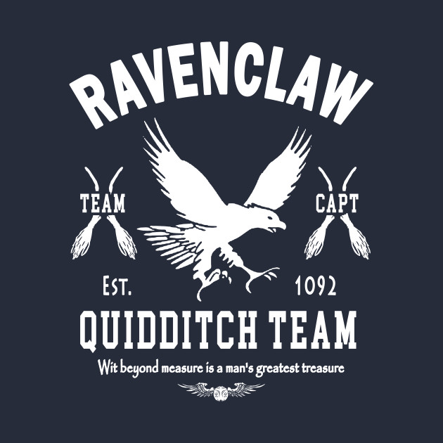
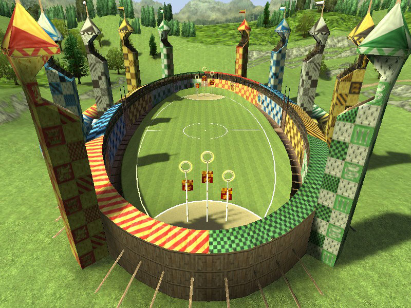
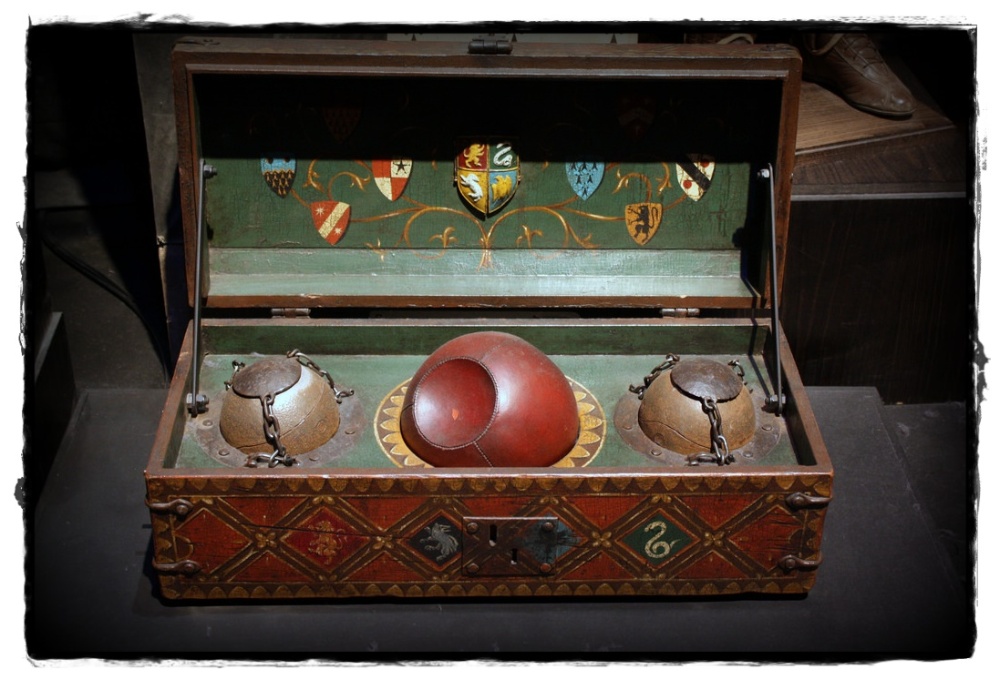
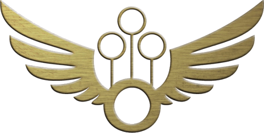

Quidditch es el nombre de un deporte ficticio practicado por personajes del mundo mágico en la serie de novelas de Harry Potter, escritas por J. K. Rowling. Lo practican estudiantes de colegios como el Colegio Hogwarts de Magia y Hechicería y selecciones de todos los países. La característica principal es que se juega volando sobre escobas mágicas.
En la saga se mencionan varios tipos de escobas, por ejemplo: las Barredoras, estrellas fugaces, flecha de plata, las Cometa, la Nimbus 2000, Nimbus 2001 y la Saeta de Fuego (escoba prácticamente exclusiva para profesionales), de la cual Harry Potter tiene un modelo que le regaló su padrino Sirius Black.
En los libros de Harry Potter se dice que el Quidditch viene de tiempos muy antiguos y se creó basándose en el Queereditch Marsh, un deporte del cual Gertie Keddle, una vecina del pantano Queerditch, había visto un partido en 1014.

Después de ser creado y aprobado como el deporte mundial de los magos, se han cambiado ciertas cosas en él, por ejemplo la no inclusión de animales en el juego, como el snidget dorado, por temor a una extinción de estos, y fueron reemplazados por la actual pelota que fue llamada snitch en honor a los animales.

Se juega en un estadio con forma elíptica (150 metros de semieje mayor y 55 de semieje menor), cada uno de los lados está dotado de tres aros ubicados a un distinto nivel de altura. Para el juego se utilizan tres tipos de bolas distintas: una Quaffle, dos Bludger y una snitch dorada.

La duración de un encuentro de Quidditch es impredecible e indefinida. El juego termina cuando la snitch dorada ha sido atrapada por alguno de los jugadores. Mientras tanto, el juego sigue. El récord de duración de un partido de Quidditch es de tres meses, donde tenían que cambiar los jugadores constantemente.

Las puntuaciones son de diez puntos por cada gol marcado, y 150 puntos por atrapar la snitch dorada. Ha habido encuentros en que siendo la diferencia de los contrincantes mayor de ciento cincuenta puntos, la estrategia se ha convertido en despistar a los que van ganando para que no encuentren la snitch dorada.
El Quidditch Muggle es un deporte mixto basado en el Quidditch mencionado en las novelas de Harry Potter. Es popular entre los admiradores de la serie, niños y aficionados a deportes de ficción.
Existen diferentes versiones para el Quidditch Muggle, y la cantidad de jugadores puede variar según la versión que se juega.
Debido a la inexistencia de dispositivos mágicos, el muggle quidditch se juega sobre tierra, y en algunos casos está limitado a un campo de deportes comparable en tamaño a un campo de fútbol.
Además, hay varios equipos ya formados en España como los Barcelona Eagles y otros equipos en formación como los Dementores de Galicia o los Nightmare Grims de Tarragona o los ULPGC de Canarias.